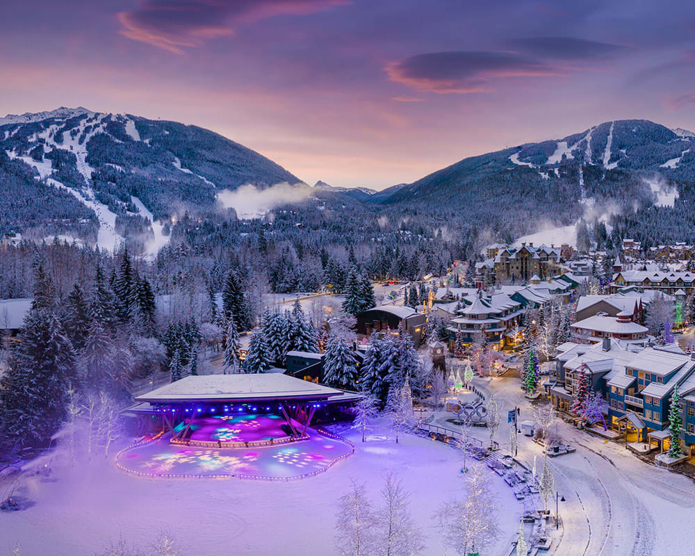
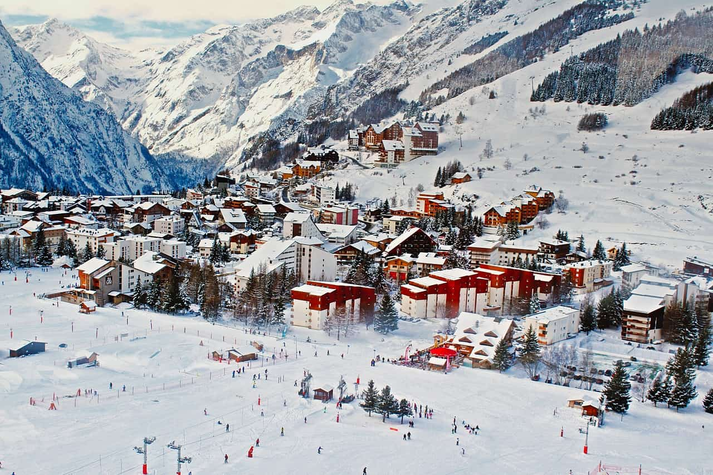
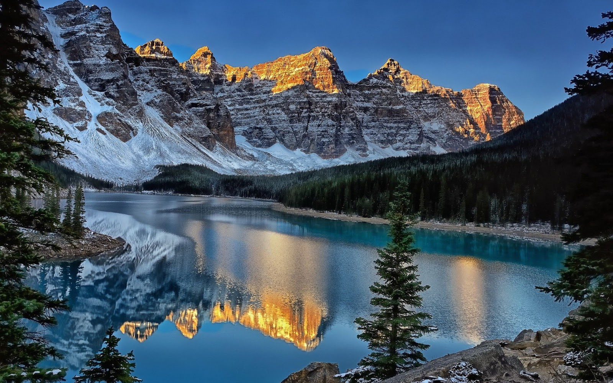
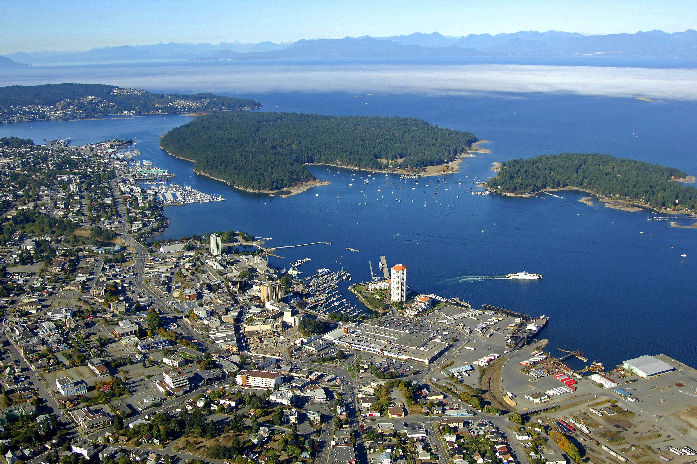

Welcome to Travel Explorer, your go-to guide for amazing destinations! Here, you'll find tips and insights on the best places to visit, starting with Whistler, a beautiful mountain town filled with outdoor adventures and scenic views. Let us help you plan your next trip or simply enjoy learning about new places!
Check out latest eventsTop Destinations
Whistler
Whistler, a premier resort town in British Columbia, is famous for its world-class ski slopes, outdoor activities, and breathtaking mountain views. It's an all-year-round destination, whether you’re into skiing, mountain biking, or simply hiking the scenic trails.
Explore WhistlerVancouver Island

Vancouver Island is known for its lush forests, rugged coastlines, and vibrant wildlife. Visit Victoria for historical charm, or head to Tofino for surfing and nature adventures. Vancouver Island is a great destination for outdoor enthusiasts and nature lovers.
Explore Vancouver IslandHope
Hope, a small town nestled in the Fraser Valley, is known for its stunning landscapes and outdoor activities. Surrounded by mountains, it’s an ideal destination for hiking, camping, and exploring the beautiful Hope River.
Explore HopeBanff
Banff, located in the heart of the Canadian Rockies, is famous for its striking mountain scenery, crystal-clear lakes, and rich wildlife. Whether you're hiking, skiing, or simply taking in the breathtaking views, Banff is an iconic destination in Canada.
Explore BanffKelowna

Kelowna, located in the heart of British Columbia’s wine country, is famous for its picturesque vineyards, wineries, and warm climate. Enjoy a leisurely stroll along the waterfront or explore the local wineries for an unforgettable experience.
Explore KelownaNanaimo
Nanaimo, located on Vancouver Island, offers a mix of stunning waterfront views, hiking trails, and charming urban attractions. Known for its beautiful harbour and historic sites, it’s a great place to explore by foot or kayak.
Explore Nanaimo